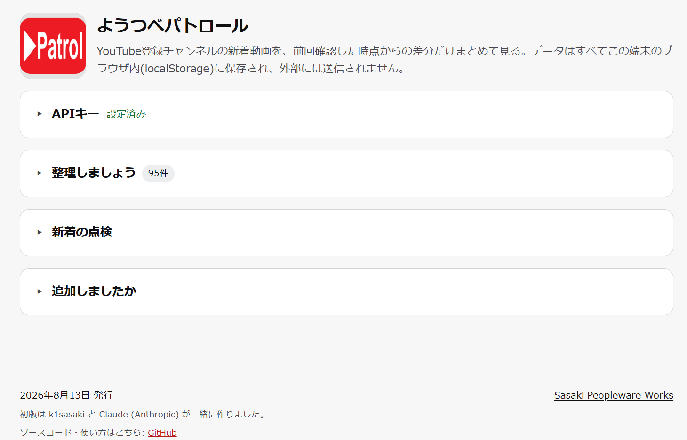
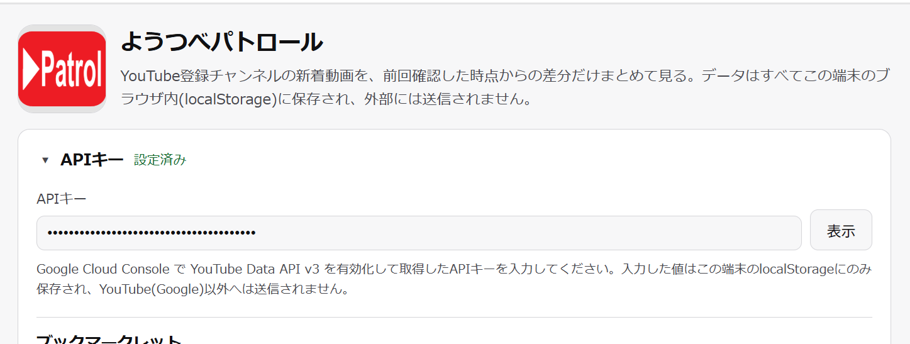
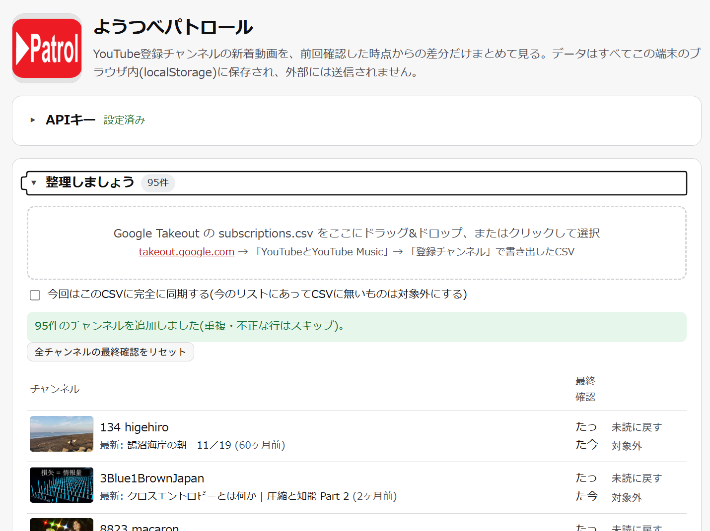
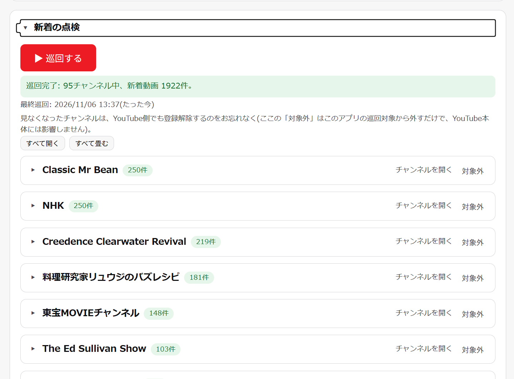
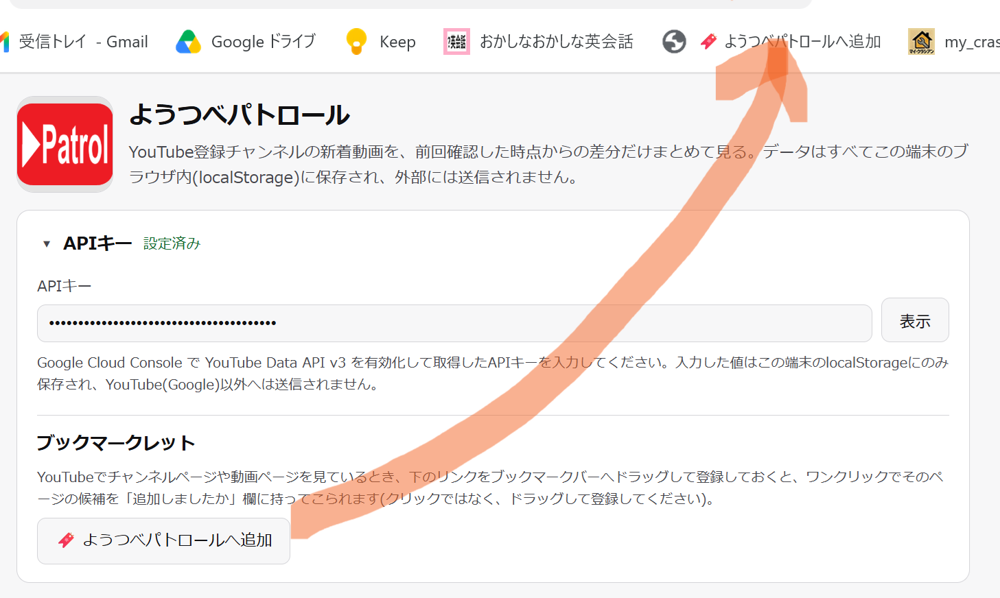
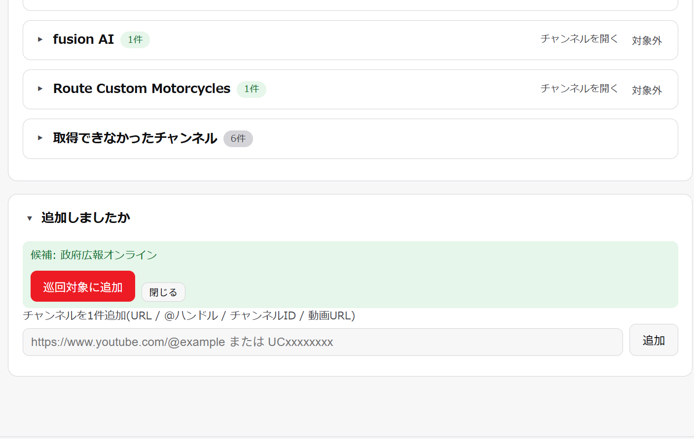

ようつべパトロール
新着動画を見逃さない
溜まってしまった登録チャンネルを整理する
登録済みのチャンネルに新着があると通知されているはずですが、確認しないままにしている、どこに新着があったか忘れてしまいがちです。
そして長く使っていると、関心の薄くなったチャンネルが溜まってしまい、いつかきれいにしたい、と思ったまま放置され続け、最近、登録したものもその中に埋もれがちです。
まずは使い方をご一読ください、そして・・・
新着動画を見逃さない
溜まってしまった登録チャンネルを整理する
登録済みのチャンネルに新着があると通知されているはずですが、確認しないままにしている、どこに新着があったか忘れてしまいがちです。
そして長く使っていると、関心の薄くなったチャンネルが溜まってしまい、いつかきれいにしたい、と思ったまま放置され続け、最近、登録したものもその中に埋もれがちです。
まずは使い方をご一読ください、そして・・・






(以下ではスマホなどでなく、PCでの操作を前提としています。Googleのアカウントが必要です。)
データはすべてこの端末のブラウザ内(localStorage)に保存されるだけで、佐々木IT粗物店を含め外部へは送信されません。
登録チャンネルが増えてくると、YouTubeのトップページは「おすすめ」に埋もれて、追っているチャンネルの新着を見落とすようになりました。自分用に、差分だけ見られる道具を作ったのが始まりです。友人にも配れるよう、各自が自分のAPIキーを使う仕組みにしました。
― 店主 佐々木
ご感想、ご質問はこちらから。